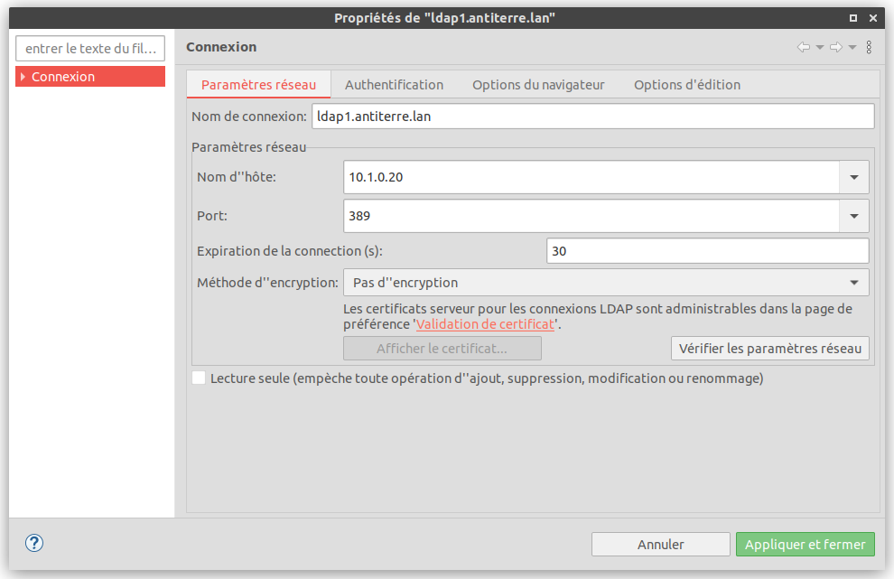
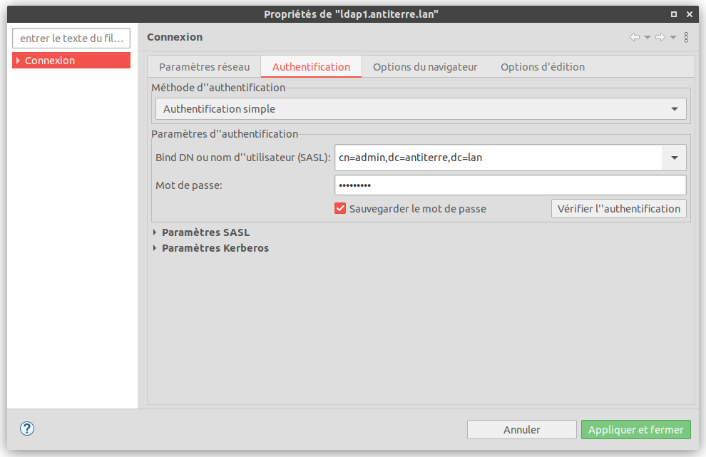
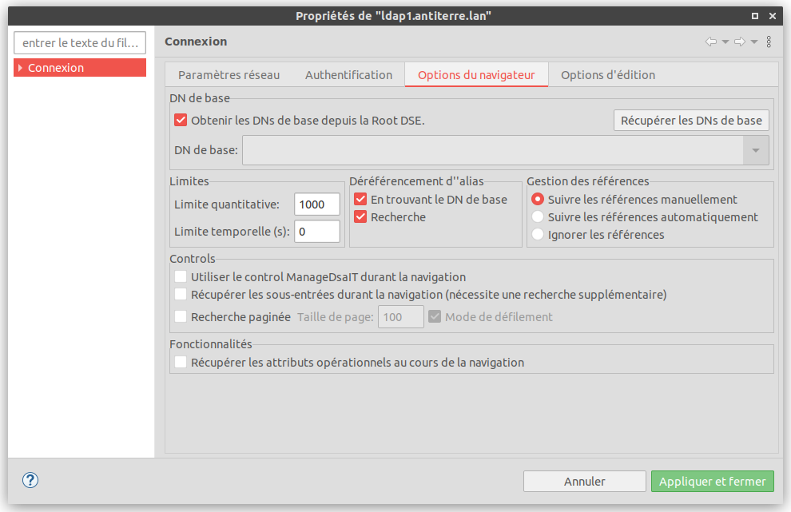
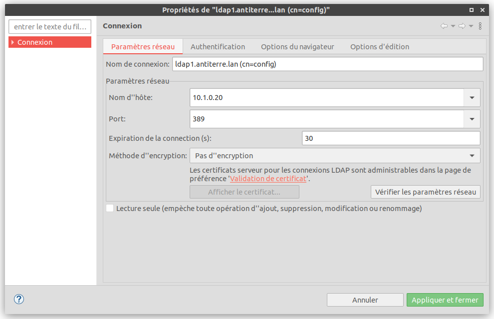
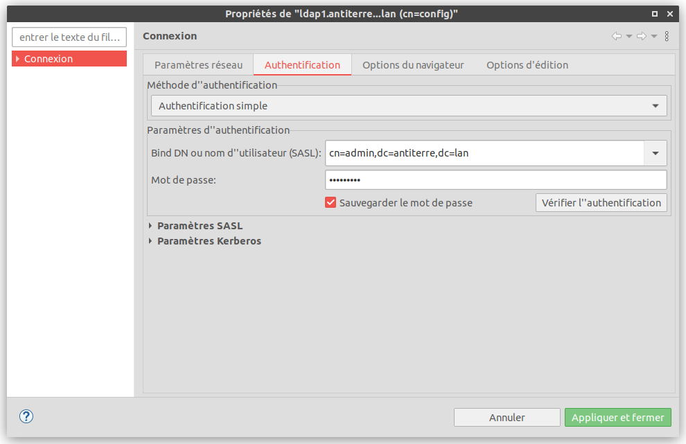
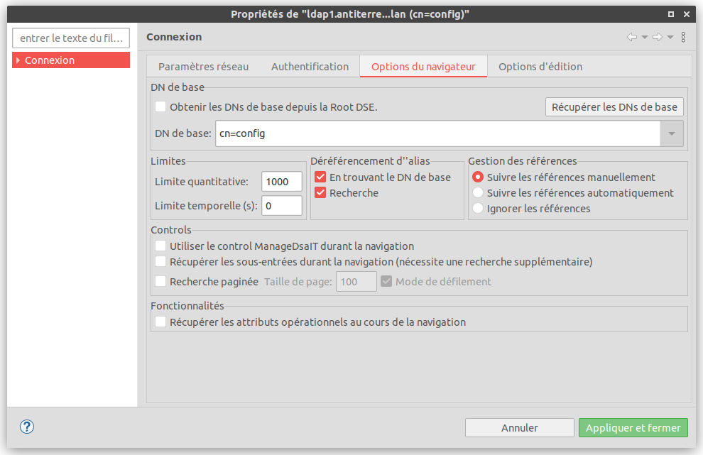

Service réseau - Installation du client graphique ldap Apache directory Studio
Cette fiche montre comment installer le client graphique ldap "Apache directory Studio".
dominique huguenin (dominique.huguenin@rpn.ch) -Installation
-
installer les paquets default-jdk default-jdk-doc
huguenindo@ubuntu-usb-dhu:~$ sudo apt install default-jdk default-jdk-doc -
télécharger l’application https://directory.apache.org/studio/downloads.html
-
décompresser l’archive
ApacheDirectoryStudio-2.0.0.v20210717-M17-linux.gtk.x86_64.tar.gz -
déplacer le dossier
ApacheDirectoryStudiodans le dossier~/lib -
Créer le fichier
~/.local/share/applications/ApacheDirectoryStudio.desktopavec le contenu ci-dessous en adaptant les chemins.[Desktop Entry] Encoding=UTF-8 Name=Apache Directory Studio Exec=/home/huguenindo/lib/ApacheDirectoryStudio/ApacheDirectoryStudio Icon=/home/huguenindo/lib/ApacheDirectoryStudio/icon.xpm Categories=Application;Development;Java;IDE Version=1.0 Type=Application Terminal=0
Connexion au DIT dc=antiterre,dc=lan



Connexion au DIT cn=config


